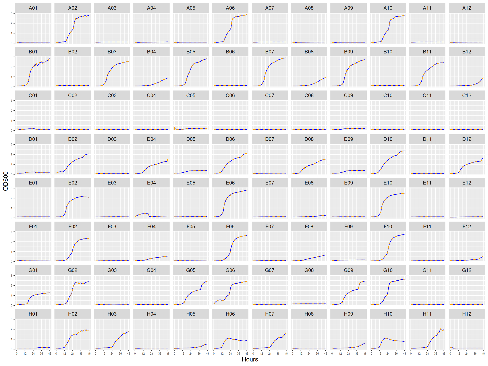
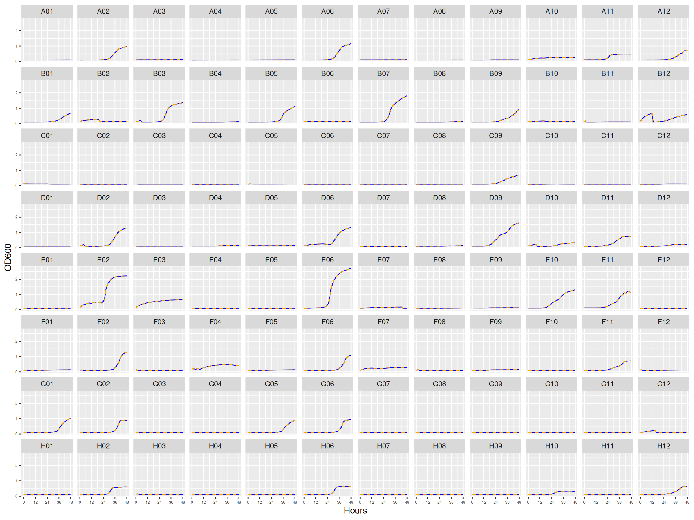
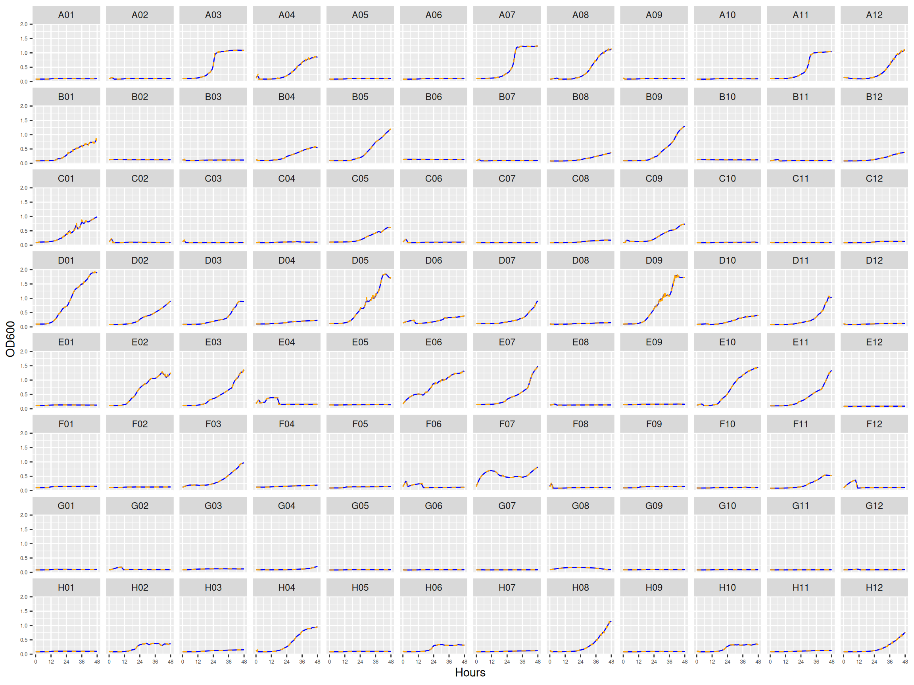

02.A Formatting growth curves from Synergy H1
Quality control
1 Introduction
The ancestral (streptomycin sensitive) and evolved (streptomycin resistant) forms of HAMBI_1287 and HAMBI_1977 were grown on Biolog Ecoplates. These are basically a set of 32 different carbon compounds in 3 replicated sets on a 96 well plate. Microbial species or communities grown on these carbon compounds respire and reduce some dye to a purple color which is then measured on a Synergy H1 multimode microplate reader.
In this notebook we read the output from the Synergy H1 plate reader, join it to the samplesheets, smooth it, and inspect every well.
2 Setup
2.1 Libraries
2.2 Global variables
3 Read and tidy Synergy output
Each plate is a separate acquisition on the Synergy H1. read_synergy_xlsx() pulls the raw data sheet, sets the first reading as time zero, pivots to long form, and zero-pads the well ids so they join to the samplesheets.
Show/hide code
plate01 <- read_synergy_xlsx(
here::here(
data_raw,
"20250613_biolog_ecoplate_1287A",
"1287A_raw_data.xlsx"
)
) %>%
# create a plate variable for later combining
mutate(plate_name = "plate01")
plate02 <- read_synergy_xlsx(
here::here(
data_raw,
"20250619_biolog_ecoplate_1287E_1977A",
"1287E_1977A_rawdata.xlsx"
)
) %>%
mutate(plate_name = "plate02")
plate03 <- read_synergy_xlsx(
here::here(
data_raw,
"20250626_biolog_ecoplate_1977A_1977E",
"1977A_1977E_rawdata.xlsx"
)
) %>%
mutate(plate_name = "plate03")4 Combine, tidy, format
4.1 Read sample metadata
Show/hide code
samplesheet01 <- readxl::read_xlsx(here::here(
data_raw,
"20250613_biolog_ecoplate_1287A",
"samplesheet_1287A.xlsx"
)) %>%
mutate(strainID = paste0("HAMBI_", strain)) %>%
mutate(plate_name = "plate01")
samplesheet02 <- readxl::read_xlsx(here::here(
data_raw,
"20250619_biolog_ecoplate_1287E_1977A",
"samplesheet_1287E_1977A.xlsx"
)) %>%
mutate(strainID = paste0("HAMBI_", strain)) %>%
mutate(plate_name = "plate02")
samplesheet03 <- readxl::read_xlsx(here::here(
data_raw,
"20250626_biolog_ecoplate_1977A_1977E",
"samplesheet_1977A_1977E.xlsx"
)) %>%
mutate(strainID = paste0("HAMBI_", strain)) %>%
mutate(plate_name = "plate03")4.2 Join with metadata to remove unused samples
Grouping by plate and well, we calculate a five point centered rolling mean. This reduces the jaggedness of the curves and also makes the resulting saved data file smaller.
Show/hide code
ecoplate_gcurves_sm <- bind_rows(plate01, plate02, plate03) %>%
left_join(
bind_rows(samplesheet01, samplesheet02, samplesheet03),
by = join_by(well, plate_name)
) %>%
dplyr::group_by(plate_name, well) %>%
dplyr::mutate(
OD600_rollmean = slider::slide_dbl(OD600, mean, .before = 2, .after = 2)
) %>%
ungroup() %>%
relocate(OD600_rollmean, .after = "OD600")
# save output for later use
readr::write_tsv(
ecoplate_gcurves_sm,
here::here(data_processed, "gcurves_smooth.tsv")
)5 Inspect growth curves
5.1 plate01
This plate contains three replicates for the ancestral form of HAMBI_1287.

5.2 plate02
This plate contains EVO_1287 (columns 1-8) and ANC_1977 (columns 9-12).

5.3 plate03
This plate contains ANC_1977 (columns 1-4) and EVO_1977 (columns 5-12).

6 Conclusions
Growth curves all look mostly reasonable. For just a couple of the carbon substrates there are some strange features (e.g., L-asparagine for HAMBI_1977). Can proceed with the analysis.